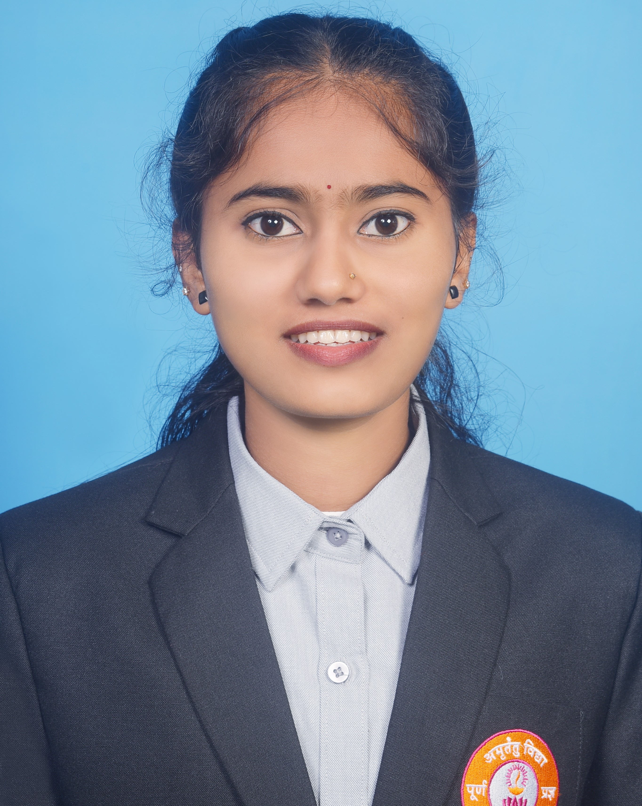

Sinchana
MCA Student, Poornaprajna Institute of Management, Udupi
Aspiring software developer pursuing a Master of Computer Applications, with interests in web development, databases and problem solving.

A Journey Connecting Learning, Code and Creativity
Academics
Coursework in programming, data structures, DBMS, operating systems and software engineering.
View Education →Projects
Hands-on work in web applications, databases and mini-projects built during the programme.
Explore Projects →Skills
Programming languages, tools and frameworks I use for learning and building applications.
See Skills →About Me
I am a Master of Computer Applications student at Poornaprajna Institute of Management, Udupi. I enjoy turning ideas into working software and am keen to grow through internships, research and collaborative projects. I am interested in software development, database management and emerging technologies. My goal is to continuously improve my technical knowledge and build practical solutions to real-world problems.
Education & Experience
Projects & Research
Skills & Learning
Achievements & Interests
My Resume
Interested in knowing more about my academic background, technical skills and projects? View or download my resume.
Contact
Email: sinchanapoojary2807@gmail.com
Phone: +91 7795084345